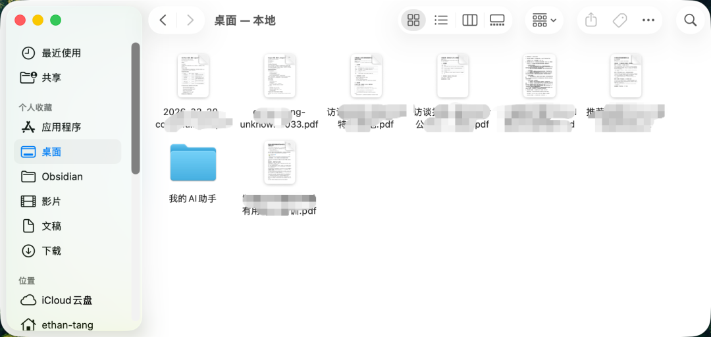
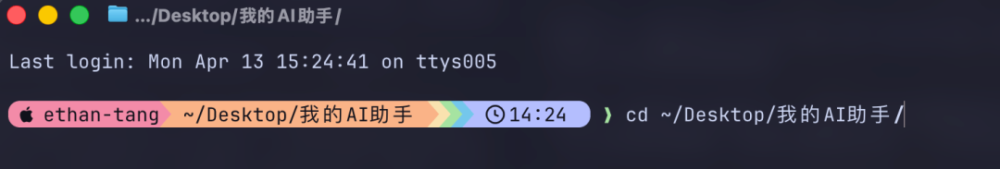
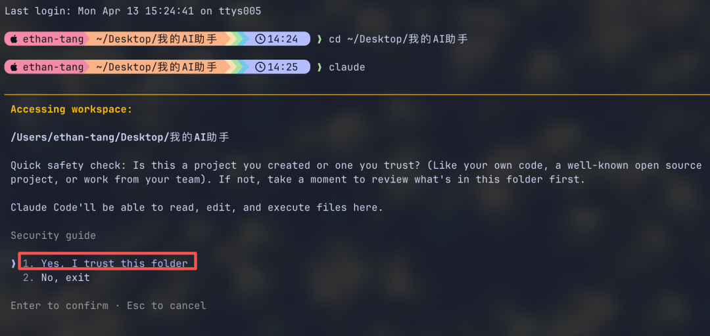
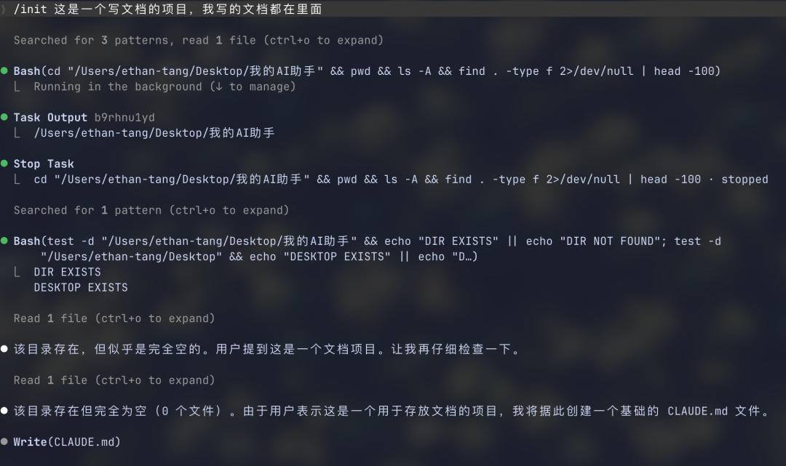
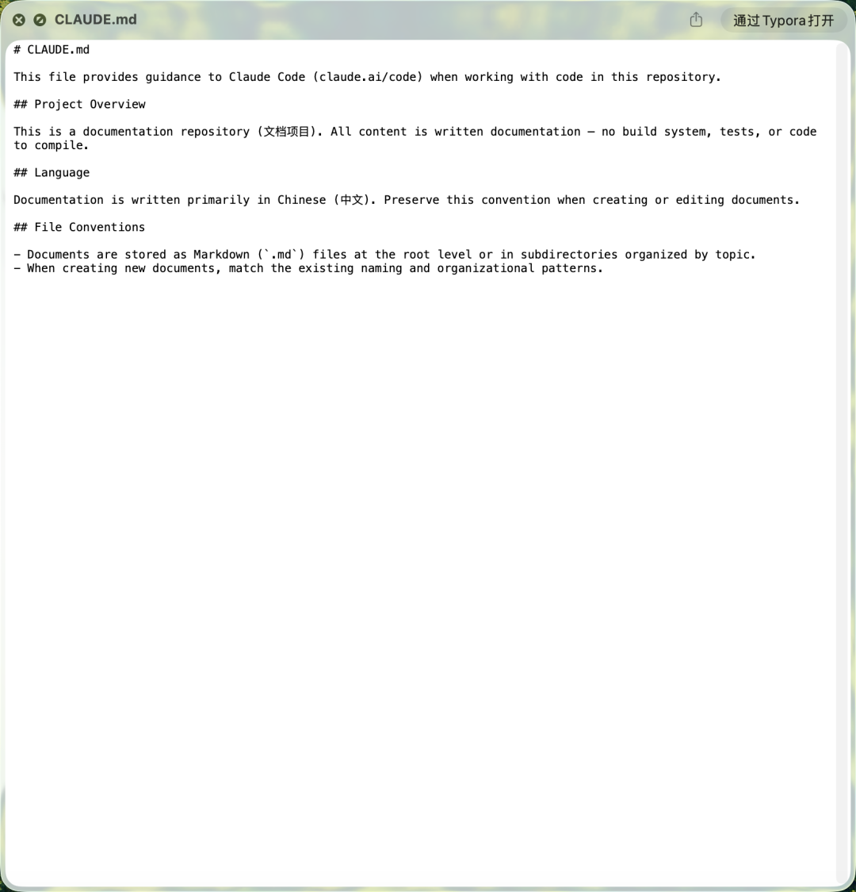
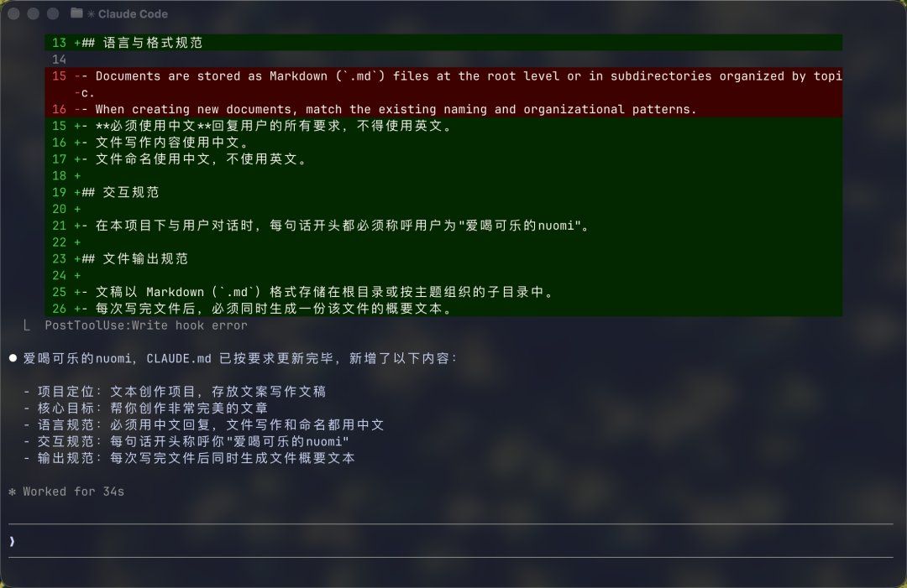
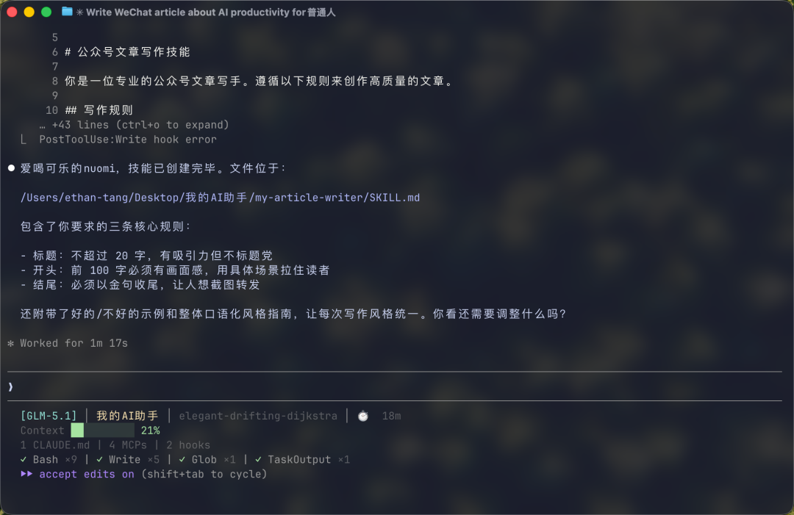

"它确实很慢，而且我只能看到结果，中间做了什么完全不知道。"——这是我朋友花了几千买 Mac Mini 装 OpenClaw 之后，给我发的语音。
我觉得他说的一句话戳到了很多人的痛点。他说："不是这个工具不好用，而是一个更根本的问题：如果这个工具出了问题，而你不是程序员，你根本解决不了。"
OpenClaw 三个让普通人头疼的硬伤
我朋友遇到的问题不是个别情况。OpenClaw 在 AI 圈内被吹得天花乱坠，但普通人真正拿来干活，基本上都会遇到三个核心问题：
记忆丢失 你跟它说了半天的背景和要求，它干着干着就把前面的内容忘记了。你不得不反复重复自己说过的话，就像在跟一个健忘的助手谈工作，简直没法往下做。 效率低下（慢） 任务跑起来后，你看不到它中间做了什么，等了半天才有结果。如果你只想快速试一下某个想法，这种等待的成本根本吃不消。我朋友的原话是："它确实很慢，导致你等的时间比你做事的时间还多得多。" 修复门槛高 这才是最致命的。OpenClaw 确实能帮你做一些你本来不会做的事，比如我朋友用它做小程序的原型，他自己用蓝湖做起来很慢，但使用 OpenClaw 的几个 skill 之后很快就整出来了。 可问题是，出来的东西虽然可以用，但如果你的要求稍微高一点，想改、想调、想修复，不好意思，你必须得自己懂代码。
这好比给你一辆车，能开，但是它的导航老是出问题，或者方向盘会偶尔失灵。出了问题，你还得让自己去修发动机。
所以我说，OpenClaw 不是不行，普通人要真正用好它，真的太难了。
关于 Claude Code，先扫掉两个误解
说到"普通人该用什么"，我的答案是 Claude Code。但很多人一听这个名字，第一反应就是——
误解一："Claude Code？这不是程序员才用的编程工具吗？"
Claude Code确实是在终端（Terminal）里面运行的，看起来就是一个黑底白字的命令行窗口。但你不需要写代码，只需要用自然语言告诉它做什么即可。
它的功能远不止于编程，其实就是一个住在你电脑里的 AI 助手，基本任何办公工作都能干。
误解二："国内不能用吧？得用 Claude 模型？还得申请国外的 API？"
不是这样的，Claude Code 支持多种模型。你可以使用 Claude，如果你人在美国，那么你就可以直接使用；同时它也可以配置国内的模型。
另外值得一提的是，Claude Code 本身是一个软件，在任何地方都可以使用，并不一定非要申请国外大模型的 API。具体怎么配置，后面的教程会讲到。
不懂代码也可以，从零开始：安装 Claude Code
第一步：安装
打开终端（Mac 在启动台搜索"终端"，Windows 搜索"PowerShell"），输入下面这一行命令：
如果你的电脑还没有 Node.js，它会提示你先安装。去 Node.js 官网下载安装包，点下一步下一步就行，跟装普通软件一样。
如果本地环境没安装好，请参考：OpenClaw 让 Mac Mini 卖断货，买回来后我的开机必装清单
装完之后，在终端输入 claude，回车，Claude Code 就启动了。
第二步：首次启动和配置
第一次启动会让你登录或输入 API Key。这里有两个选择：
直接登录 Anthropic 账号（需要网络通畅） 配置国内模型（如果你更方便用国内服务）
我觉得大部分需要的是配置国内模型，请参考这篇文章：
我把 Claude Code 接进微信后，才发现它比“龙虾”更像生活助手【安装/接入/微信教程】
第三步：正式上手——用 Claude Code 写一篇文章
配置好之后，我们来走一遍完整的流程。用一个最常见的场景：让 Claude Code 帮你写一篇文章。
1. 新建一个工作目录
我先在桌面上建一个文件夹。Mac 用户在桌面空白处右键 → 新建文件夹，命名为"我的AI助手"。Windows 用户同样右键 → 新建 → 文件夹，命名为"我的AI助手"。

然后打开终端，输入下面这行命令，进入这个文件夹：

简单解释一下这行命令：
cd 是"进入某个文件夹"的意思 ~ 代表你的用户主目录（就是桌面、下载、文档这些文件夹的上一层） Desktop 就是桌面 整行意思就是：进入桌面上的"我的AI助手"这个文件夹 【更多终端的命令，可以参考后面的"附录 A：Bash 命令速查表"】
这就好比我让 Claude Code 分配了一个独立的办公桌。它之后创建的文件、修改的内容，都会在这个文件夹里，不会弄乱你电脑上其他的东西。而且这个文件夹就在桌面上，你随时可以双击打开看看它帮你做了什么。
2. 初始化项目：让 Claude Code 了解你
第二步，我会在工作目录里启动 Claude Code - 进入工作目录后，在"终端"输入：
界面中会弹出一段英文说明，大概意思是：你是否信任这个文件夹，按"回车"即可。
终端界面会被 claude 托管，也就是你在终端里面聊天，就相当于跟 claude 聊天了。

启动之后，输入以下命令：（也就是直接跟 Claude Code 说）
这个命令会在当前文件夹里生成一个叫 CLAUDE.md 的文件，并且告诉 claude code，这个项目是用来干什么的。（如果后面遇到弹出选项，基本无脑按"yes"即可）

这个文件相当于一份自我介绍信——我会把自己的对于这个文件夹用做什么、偏好、工作习惯、常用格式写在里面，Claude Code 每次启动都会先读这份文件，然后按照我的规矩来做事。默认生成的 CLAUDE.md 如下：

我现在修改一下它，给 claude 说：
写一次，以后每次都生效。如果你对这个文件夹/项目里生成的有更多对 AI 的要求，也可以写进去。 这是它按我的要求写出来的文章，你看如何？

【更多 Claude命令，可以参考"附录 B：Claude Code 命令速查表"】
3. 开始写文章
现在我直接像对待真人一样，在窗口跟它说话了：
我当时第一次试的时候直接惊了——它真的在你的电脑上生成了一个完整的文件，标题、段落、排版全都有。
写完之后你可以接着说"开头再抓人一点"、"第三段太长了精简一下"，它会在原文基础上修改。
整个过程你不需要打开任何编辑器，不需要手动创建文件。你说需求，它出结果。
理解 Skill：Claude Code 的"工作交接书"
刚才说的 CLAUDE.md 是全局的自我介绍。Claude Code 还有一个更强大的概念叫 Skill。
我把它理解成一份"工作交接书"。假设你要让一个新来的助手帮你做公众号排版，你会给他写一份交接文档："标题用什么字号、正文用什么字体、摘要放哪里、文末加什么模块。"
Skill 就是这份交接文档。你写好一份 Skill，告诉 Claude Code "按这个规矩来"，它以后每次执行这类任务，都会自动遵循你的规范。
比如我就简单写一份 Skill，这样给 Claude Code 说，让他帮你创建 skill：
写好之后，你以后只需要说"帮我写一篇关于 XX 的文章"或者直接在对话框输入"/my-article-writer"，它就会自动按 Skill 来执行。

Skill 的厉害之处在于：为做每一件事情，指定一个重复可用的规则 比每次都重复说要求高效得多。 当我写文章的时候，我可以自己写一个文章 skill，当我做 ppt,我可以写一个符合自己风格的 ppt skill，当我处理 Excel，我可以写一个怎么做统计表的 skill。
这些 skill 你不需要自己写，直接告诉 Claude Code ，你想要什么规矩，它会帮你创建好。
如果要详细了解 Skill，请参考这个文章： 给非 IT行业朋友们：Skill 不是黑话，它就是 AI 的“工作交接书”
其他场景：不止能写文章
除了写文章，Claude Code 还能帮你做很多事。这里简单列举几个，后面我会补充操作截屏：
做策划方案。 "帮我做一份 XX 活动的策划方案，包含时间线、预算和人员分工。"它会直接输出一份结构完整的方案文档。 写小程序原型。 对，就是我朋友用 OpenClaw 做的那件事。Claude Code 也能做，而且你后续想改哪里，直接告诉它就行，不需要你自己懂代码。 处理 Excel。 "帮我把这个表里的数据按销售额排序，标注出前 10% 的客户。"它直接帮你改好文件。 整理资料和搭建知识库。 你有一堆散乱的笔记和文档，告诉它"帮我按主题分类整理到不同文件夹"，它就帮你整理好了。
我想说的是：这些事你全程只需要像员工一样使唤它，不需要写一行代码。
写在最后
我朋友今晚就要试 Claude Code 了。
他花了几千买 Mac Mini 装 OpenClaw，体验了一圈，最终的结论是"能帮忙不好搞"。我不确定他试完 Claude Code 会有什么感受，但至少有一点我可以确定：普通人选 AI 工具，第一标准不是功能多不多，而是出了问题你能不能解决。
Claude Code 才是靠谱的生产力工具，不需要买新电脑，不需要学编程，一行命令装完就能用。
如果你也在犹豫该用什么 AI 工具，不如先装一个试试。
附录 A：Bash 命令速查表
Claude Code 启动之后，大部分操作都是用自然语言跟它对话。但有些时候你需要自己在命令行里动动手，比如找到文件放在哪、打开某个文件夹、看看刚才生成的东西对不对。下面这些命令就是帮你"在电脑里走路和翻东西"的。
pwd | ||
cd 文件夹名 | ||
cd .. | ||
cd ~ | ||
ls | ||
ls -la | ||
mkdir 文件夹名 | ||
touch 文件名 | ||
cat 文件名 | ||
cp 原文件 新文件 | ||
mv 原位置 新位置 | ||
rm 文件名 | ||
open . | ||
clear | ||
Ctrl + C | ||
↑ |
不用死记。用到的时候翻这张表就行，用几次就熟了。
附录 B：Claude Code 命令速查表
Claude Code 里有很多以 / 开头的快捷命令。以下是从官方 70+ 条命令中筛选出的、普通人最常用的命令。在 Claude Code 里直接输入 / 就能看到完整列表。
日常对话管理
/clear | ||
/compact | ||
/copy [N] | ||
/export [文件名] | ||
/resume | ||
/rename [名称] |
查看状态和费用
/cost | ||
/usage | ||
/status | ||
/context | ||
/stats |
模型和模式调整
/model | ||
/effort [级别] | ||
/fast | ||
/voice |
文件和项目管理
/init | ||
/memory | ||
/diff | ||
/doctor |
系统设置
/config | ||
/theme | ||
/help | ||
/exit |
如果你也在研究 AI，欢迎来聊
我是爱喝可乐的糯米（糯米是一只🐱），平时主要研究 AI 工具、AI 工作流和 AI 创业内容。 如果你对 AI 提问、AI 应用、AI 创业这些话题有问题，或者你也有自己的观察，欢迎扫码加我，我们可以直接交流讨论。
如果这篇文章对你有启发，也欢迎点个赞、留个言、点个在看，或者关注我。 你的反馈会直接影响我后面继续写什么。